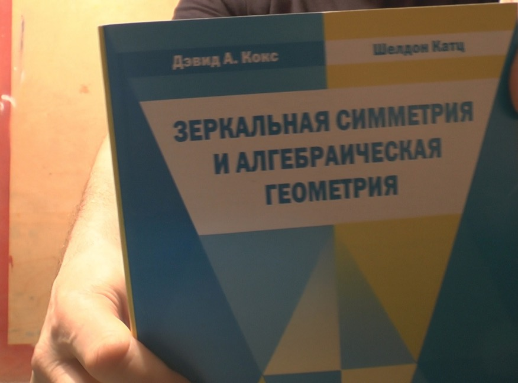

-
Введение
-
1.
Расслоенные пространства и их приложения
-
2.
Жан-Пьер СЕРР. Собрание сочинений
-
3.
Andrew J.Hanson. Visualizing Quaternions
-
4.
Daniel Fontijne. Geometric Algebra For Computer Science
-
5.
Колин Маклахлан, Алан У.Рид. Арифметика трехмерных гиперболических многообразий
-
6.
А.Китаев, А.Шень, М.Вялый. Классические квантовые вычисления
-
7.
Ю.И.Манин, А.А.Панчишкин. Введение в современную теорию чисел
-
8.
С.К.Ландо. Лекции о производящих функциях
-
9.
В.А.Васильев. Лагранжевы и лежандровы характеристические классы
-
10.
С.В.Матвеев. Алгоритмическая топология и классификация трехмерных многообразий
-
11.
С.П.Кузнецов.Динамический хаос
-
12.
Джет Неструев. Гладкие многообразия и наблюдаемыес
-
13.
Д.Мамфорд. Красная книга о многообразиях и схемах
-
14.
Фундаментальная математика в работах молодых ученых
-
15.
Сборник работ под редакцией Э.Бускаран. Теория моделей и алгебраическая геометрия
-
16.
Б.Ф.Федоров, Л.М.Цибулькин. Голография
-
17.
Г.Казанова. Векторная алгебра
-
18.
С.Маклейн. Категории для работающего математика
-
19.
В.И.Арнольд. Что такое математика?
-
20.
Философские вопросы квантовой физики
-
21.
Ричард М. Кроновер. Фракталы и хаос в динамических системах
-
22.
Ю.И.Манин. Введение в теорию схем и квантовые группы
-
23.
В.Назайкинский, Б.Стернин, В.Шаталов. Методы некоммутативного анализа
-
24.
К.Блаттер. Вейвлет анализ.Основы теории
-
25.
Э.Столниц, Т.ДеРоуз, Д.Салезин. Вейвлеты в компьютерной графике.Теория и приложения
-
26.
В.Ф.Осипов. Структура пространства - времени: Геометрия Вейля. Калибровочные поля. ч.1
-
27.
В.Ф.Осипов. Структура пространства - времени: векторная алгебра и анализ. ч.1,2
-
28.
Дж.Мерфи. С*-алгебры и теория операторов
-
29.
Р.Вендт, Б. А.Хесин. Геометрия бесконечномерных групп
-
30.
Ю.Н.Челноков. Кватернионные и бикватернионные модели и методы механики твердого тела и их приложения
-
31.
И.Я.Новиков, В.Ю.Протасов, М.А.Скопина. Теория всплесков
-
32.
И.Н.Бернштейн. Семинар по суперсимметриям. т.1: Алгебра и анализ:основные факты
-
33.
Э.Э.Лорд, А.Л.Маккей, С.Ранганатан. Новая геометрия для новых материалов
-
34.
Дэвид А.Кокс, Шелдон Катц. Зеркальная симметрия и алгебраическая геометрия
-
35.
Д.Дойч. Структура реальности
-
36.
А.К.Звонкин, С.К.Ландо. Графы на поверхностях и их приложения
-
37.
Р.Гомпф, А.Штипшиц. Четырехмерные многообразия и исчисление Кирби
-
38.
А.А.Кириллов. Лекции по методу орбит
-
39.
А.А.Кириллов. Лекции по методу орбит
-
40.
А.М.Виноградов, И.С.Красильщик (ред.). Симметрии и законы охранения уравнений математической физики
-
41.
А.М.Виноградов, И.С.Красильщик (ред.). Симметрии и законы охранения уравнений математической физики
-
42.
Ю.И.Манин. Фробениусовы многообразия, квантовые когомологии и пространства модулей
-
43.
С.Хелгасон. Дифференциальная геометрия, группы Ли и симметрические пространства
-
44.
А.Б.Каток, Б.Хасселблат. Введение в теорию динамических систем
-
45.
М.Табор. Хаос и интегрируемость в нелинейной динамике
-
46.
Элиашберг Я., Трейнор Л. (под редакцией). Лекции по симплектической геометрии и топологии
-
47.
Элиашберг Я., Трейнор Л. (под редакцией). Лекции по симплектической геометрии и топологии
-
48.
Под редакцией А. В. Болсинова, А. Т. Фоменко, А. И. Шафаревича. Топологические методы в теории гамильтоновых систем
-
49.
Ю.П.Соловьев, Е.В.Троицкий. С*-алгебры и эллиптические операторы в дифференциальной топологии
-
50.
Герман Хакен. Принципы работы головного мозга
-
51.
Труды концеренции, посвященной 10-летию РФФИ. Математика, механика, информатика.
-
52.
В.Ю.Овсиенко, С.Я.Табачникова. Проективная дифференциальная геометрия. Старое и новое: от производной Шварца до когомологий групп диффеоморфизмов.
-
53.
Дж.У.Вик. Теория гомологий. Введение в алгебраическую топологию.
-
54.
Омельченко А.В. Методы интегральных преобразований в задачах математической физики.
-
55.
Г.Ф.Вороной. Избранные труды.
-
56.
Учпедгиз-1960г. Преподавание математики.
-
57.
Р.Пенроуз , В.Риндлер. Спиноры и пространство-время.
-
58.
Жан Пиаже. Труды.
-
59.
М.Нильсен, И.Чанг. Квантовые вычисления и квантовая информация.
-
Опубликовано с помощью GitBook
Зеркальная симметрия и алгебраическая геометрия
Автор: Дэвид А.Кокс, Шелдон Катц
